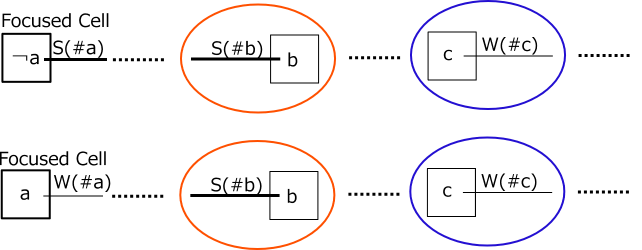
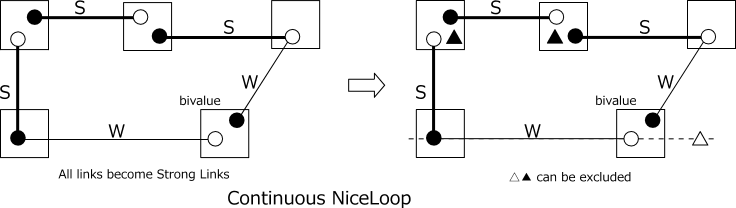
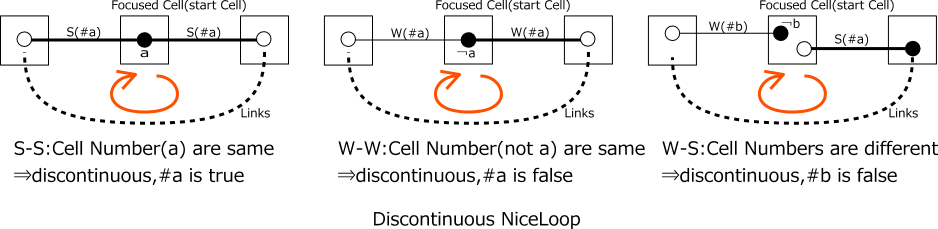
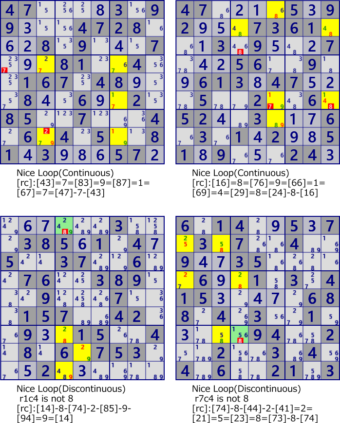

NiceLoop
NiceLoop is an analysis algorithm that connects strong and weak between cells to create a loop.
Link connection
Focusing on the cell, there are the following three patterns (4 including direction) in the combination of links connected to the cell. However, In order for constraints to be conveyed by link concatenation and an analysis algorithm can be constructed, the following conditions must be satisfied.
Link connection condition
- S-S：The digits on the links are different
- W-W：The cell is bivalue, the digits of the link is different.
- S-W,W-S：Link digits are the same
In the following figure, the left side shows the link connection that satisfies the link connection condition. As shown in the figure on the right, when constraining to ¬b, b, ¬a, a (¬: non, not) by the inflow link from the left side, constraints are transmitted to the link flowing to the right side and the destination(cell). Although it was supposed to flow in from the left, even when flowing in from the right side, it can be confirmed that constraints propagate. That is, a connection that satisfies the link connection condition is bidirectional.
Beginning with the focused cell, create a connection of links that satisfy the link connection condition.
Propagation of restriction
- If the link flowing out from the focused cell is a strong link(#a) and the digit is ¬#a(not a)
The restriction propagates, the downstream cell of the strong link(#b) is determined as #b, the upstream cell of the weak link(#c) as the digit #c. - If the link flowing out from the focused cell is a weak link(#a) and the digit is #a
The restriction propagates, the downstream cell of the strong link(#b) is determined as #b, the upstream cell of the weak link(#c) as the digit #c. - When the above two assumptions are not satisfied, the constraint from the focused cell does not propagate.

When linking is established, if the condition of outflow from the first focused cell is satisfied, the digit is fixed in the link connected to the link flow. Using these, an analysis algorithm is assembled.
Continus NiceLpLoop
Continuous loop refers to a state in which link flow are extended and connected to the origin cell, and the link connection condition is satisfied even in the origin cell. In a continuous loop, the origin cell is no longer meaningless, and all cells on the loop have equivalent properties.
In a continuous loop, the digits in the cell are classified into two types.
The above figure is classified into ○ and ● as shown on the left of the next figure.
It can be confirmed that this classification does not contradict the relation of the strong/weak link.
One of the digit categorized into two types is true and the other is false.
However, it is not decided which one is true.
Also, since both ends of a link are always true and false,
a weak link will have the same properties as a strong link.
At this time, it becomes Locked for the cell/digit which breaks the loop.
In particular, the following digits can be excluded:
(1) digits outside the loop of house including weak link(△ in the following),
(2) digits not related to loops in the cell to which two strong links are connected(▲ in the following)
If these (△ and ▲) are true, ○ and ● on the continuous loop become false at the same time.

Discontinus NiceLpLoop
Assume that the link chain has been extended and reach the starting cell.
If the link connection condition is not satisfied, it is called a discontinuous loop.
The starting cell has the following state.
Link connection discontinuity condition:
- S-S ： digits are same.
- W-W ： digits are same.
- S-W,W-S ： digits are different.
And, it is necessary to select the digit of the origin cell so that constraints do not propagate. The candidate digit of the starting cell is determined as follows.
- S-S : The digit a of the link is the same ⇒ The focused cell is confirmed as a
- W-W : he cell is bivalue and the digit a of the link is the same ⇒ the focused cell is determined as not a
- S-W,W-S : Link digits are different ⇒ (Weak link digit b) focused Cell is determined as not b

Example of NiceLoop

47....3.99...4728...8.9...7...81..4..167.48...8..6..2.85..7...4.6.4.5..81.3...57.
47....5.92...7361...3.9...7...56..9..613.47...5..2..6.52..3...6.3.1.2..51.9...24.
......3...385.1.4.5..37..6..76..389...9...7...157..42..9..15..4.8.6.753...2......
6.14..5.7.3.7..4..9..35.....6..1.3.415.....688.4.3..1.....94..2..2..3.4.4.6..21.3
NiceLoopm program
NiceLoop analysis algorithm uses cell link. NiceLoop is analyzed in the following procedure.
- In NiceLoop, first prepare the cell link.
Next, set the search conditions(Size, focused cell, focused digit, first link),
and prepare a stack for results.
- The actual search routine is a recursive function. First, it checks whether size order has been reached, and if reached, it returns immediately.
- If the order has not been reached, extend 1 link from the current position. The stretching link is that satisfies the link connection condition from the previous link and the current cell.
- When extending the link, exclude already used cells. UsedCells defined by the previous search function is used to manage used cells. This UsedCells will copy the previous stage and add the current stage before proceeding to the next stage. Having history management variables in the recursive function automates state restoration.
- When extending the link, if it reaches the focused cell,
check whether Niceloop's solution condition is satisfied.
- Niceloop's solution check determines whether it is a continuous loop or a discontinuous loop.
- In the case of continuous loop, examine to exclude weak links to strong links and exclusion of SS cells.
- In a discontinuous loop, examine the exclusionary digits of discontinuous cells.
- When there are digits that can be excluded, it becomes a solution of Niceloop.
public partial class NiceLoopGen: AnalyzerBaseV2{
private int GStageMemo;
private int S=1;
public int NiceLoopMax{ get{ return GNPXApp000.GMthdOption["NiceLoopMax"].ToInt(); } }
public NiceLoopGen( GNPX_AnalyzerMan pAnMan ): base(pAnMan){ }
private void Prepare(){
if(pAnMan.GStage!=GStageMemo) {
GStageMemo=pAnMan.GStage;
CeLKMan.Initialize();
CeLKMan.PrepareCellLink(1+2);
}
}
public bool NiceLoop( ){ //Depth-first Search
Prepare();
CeLKMan.PrepareCellLink(1+2); //Generate StrongLink,WeakLink
for( int szCtrl=4; szCtrl<NiceLoopMax; szCtrl++ ){
foreach( var P0 in pBDL.Where(p=>(p.No==0)) ){ //Origin Cell
foreach( var no in P0.FreeB.IEGet_BtoNo() ){ //Origin Number
foreach( var LKH in CeLKMan.IEGetRcNoType(P0.rc,no,3) ){ //First Link
if( pAnMan.CheckTimeOut() ) return false;
var SolStack=new Stack<UCellLink>();
SolStack.Push(LKH);
Bit81 UsedCells=new Bit81(LKH.rc2); //Bit Representation of Used Cells
_NL_Search(LKH,LKH,SolStack,UsedCells,szCtrl-1);
if(SolCode>0) return true;
}
}
}
}
return false;
}
private bool _NL_Search( UCellLink LK0, UCellLink LKpre, Stack<UCellLink> SolStack, Bit81 UsedCells, int szCtrl ){
if( szCtrl<=0 ) return false;
foreach( var LKnxt in CeLKMan.IEGet_CeCeSeq(LKpre) ){ //links that satisfy concatenation conditions
int rc2Nxt = LKnxt.rc2;
if( UsedCells.IsHit(rc2Nxt) ) continue; //UsedCells does not include Origin Cell
{ //===== Chain Search =====
SolStack.Push(LKnxt);
//___Debug_Print_NLChain(SolStack);
if( rc2Nxt==LK0.rc1 && szCtrl==1 ){
if( SolStack.Count>2 ){ //Loop was formed (the next cell matches the Origin Cell)
int SolType=_NL_CheckSolution(LK0,LKnxt,SolStack,UsedCells);//Solved?
if( SolType>0 ){
.
. (Solution report code)
.
return true;
}
}
}
else{
Bit81 UsedCellsNxt = UsedCells|(new Bit81(rc2Nxt)); //Create a new bit representation of used cell
_NL_Search(LK0,LKnxt,SolStack,UsedCellsNxt,szCtrl-1); //Next step Search(recursive call
if(SolCode>0 ) return true;
}
SolStack.Pop(); //Failure(Cancel link extension processing）
} //-----------------------------
}
return false;
}
private int _NL_CheckSolution( UCellLink LK0, UCellLink LKnxt, Stack<UCellLink> SolStack, Bit81 UsedCells ){
bool SolFond=false;
int SolType = CeLKMan.Check_CellCellSequence(LKnxt,LK0)? 1: 2; //1:Continuous 2:DisContinuous
if(SolType==1){ //===== continuous =====
//=== Change WeakLink to StrongLink
List<UCellLink> SolLst=SolStack.ToList();
Bit81 UsedCellsT = UsedCells|(new Bit81(LK0.rc1));
foreach( var L in SolLst ){
int noB=1<<L.no;
foreach( var P in pBDL.IEGetCellInHouse(L.tfx,noB) ){
if( UsedCellsT.IsHit(P.rc) ) continue;
P.CancelB |= noB;
SolFond=true;
}
}
//=== S-S (There are no other numbers)
SolLst.Reverse();
SolLst.Add(LK0);
var LKpre=SolLst[0];
foreach( var LK in SolLst.Skip(1) ){
if( LKpre.type==1 && LK.type==1 ){ //S-S
UCell P=pBDL[LK.rc1];
int noB = P.FreeB.DifSet((1<<LKpre.no)|(1<<LK.no));
if( noB>0 ){ P.CancelB=noB; SolFond=true; }
}
LKpre=LK;
}
if(SolFond) SolCode=2;
}
else if(SolType==2){ //===== discontinuous =====
int dcTyp= LK0.type*10+LKnxt.type;
UCell P=LK0.UCe1;
switch(dcTyp){
case 11:
P.FixedNo=LK0.no+1; //Cell number determination
P.CancelB=P.FreeB.DifSet(1<<(LK0.no));
SolCode=1; SolFond=true; //(1:Fixed）
break;
case 12: P.CancelB=1<<LKnxt.no; SolCode=2; SolFond=true; break;//(2:Exclude from candidates）
case 21: P.CancelB=1<<LK0.no; SolCode=2; SolFond=true; break;
case 22:
if( LK0.no==LKnxt.no ){ P.CancelB=1<<LK0.no; SolFond=true; SolCode=2; }
break;
}
}
if(SolFond){ return SolType; }
return -1;
}
}